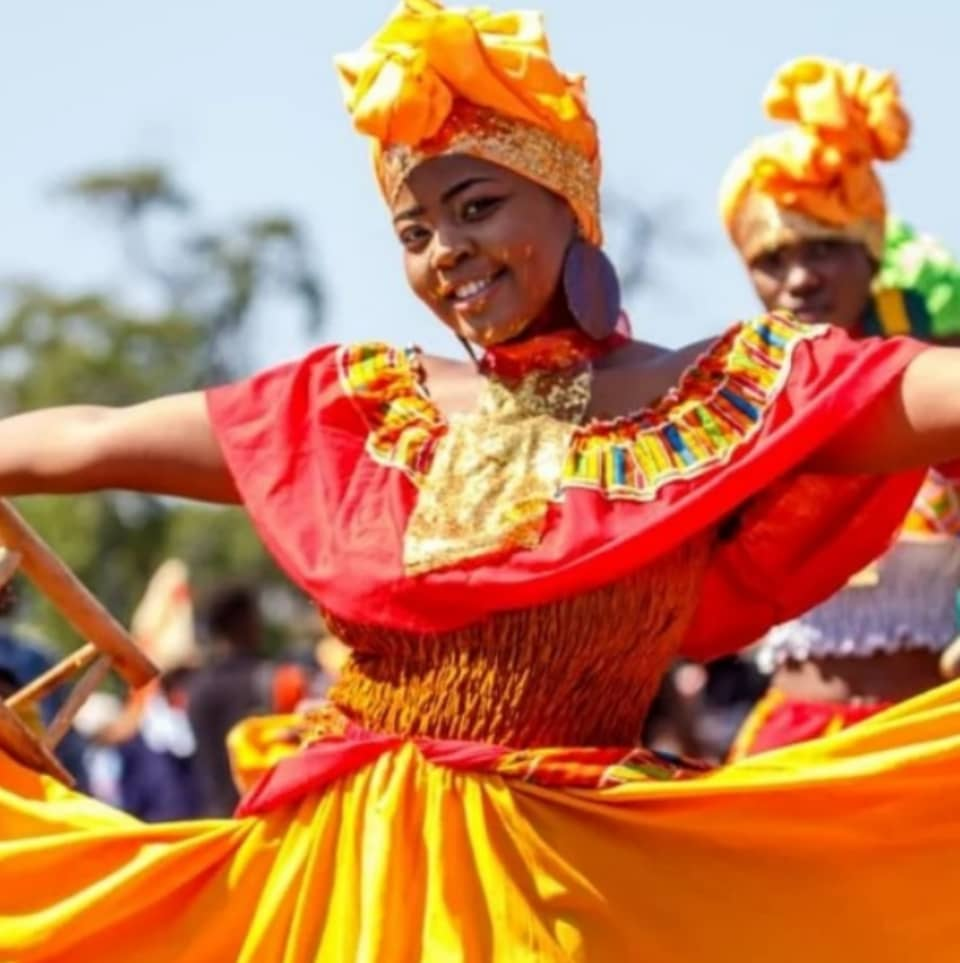

Explorez notre histoire, notre culture et notre beauté naturelle
Les Monuments Historiques
Plongez dans l'histoire et la culture en visitant des sites emblématiques tels que la majestueuse Citadelle Laferrière, inscrite au patrimoine mondial de l'UNESCO. Ce chef-d'œuvre architectural offre un témoignage unique de la résilience et de l'ingéniosité des peuples du passé.
Ne manquez pas non plus d'explorer d'autres trésors nationaux, comme des châteaux, des cathédrales, des musées et des sites archéologiques qui racontent chacun une histoire fascinante. Ces monuments sont des fenêtres ouvertes sur notre riche patrimoine culturel et historique.
La Culture Haïtienne
Plongez dans la richesse vibrante de la culture haïtienne, un mélange unique d'influences africaines, européennes et indigènes qui se reflète dans tous les aspects de la vie quotidienne. Explorez notre musique envoûtante, des rythmes entraînants du compas à la profondeur spirituelle du rara et des chants vodou, qui racontent des histoires de résilience et de fierté.
Dégustez notre cuisine savoureuse, où chaque plat, comme le riz djon-djon, le griot ou le lalo, est un véritable voyage gustatif, empreint de traditions transmises de génération en génération. Ces saveurs riches et authentiques font de chaque repas une célébration.
Découvrez aussi nos traditions uniques, des danses folkloriques aux carnavals colorés, en passant par l'artisanat local et les récits historiques. Chaque expression de notre culture est une fenêtre ouverte sur l'âme d'Haïti, un témoignage vivant de sa créativité et de son héritage exceptionnel.
La culture haïtienne, c'est bien plus qu'un patrimoine : c'est une expérience immersive qui invite à la découverte, au partage et à l'émerveillement.

Les Trésors Naturels
Découvrez les merveilles naturelles d'Haïti, une terre d'une beauté exceptionnelle où la nature révèle toute sa splendeur. Plongez dans les eaux cristallines de nos plages paradisiaques, comme celles de Labadie, avec leur sable blanc et leurs lagons paisibles, parfaits pour la détente et l'exploration sous-marine.
Laissez-vous émerveiller par nos cascades majestueuses, comme la célèbre Saut-d'Eau et les Bassins Bleu, véritables havres de paix entourés d'une végétation luxuriante, idéaux pour se reconnecter avec la nature. Chaque chute d'eau raconte une histoire et offre une expérience unique.
Explorez nos paysages à couper le souffle, des montagnes verdoyantes de Kenscoff aux vastes plaines et collines qui s'étendent à perte de vue. Découvrez également des sites uniques comme le parc national de La Visite et le parc Macaya, où la biodiversité haïtienne s'exprime dans toute sa richesse.
Les trésors naturels d'Haïti ne sont pas seulement des lieux à visiter : ils sont des invitations à vivre des aventures inoubliables et à créer des souvenirs impérissables, tout en appréciant la magie et l'harmonie de la nature.